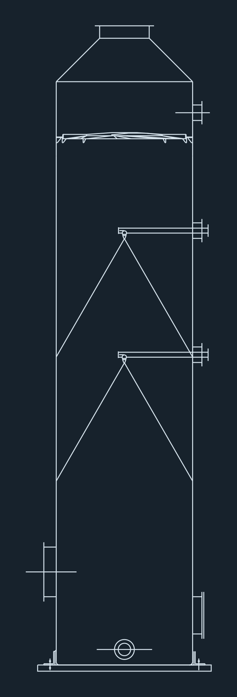
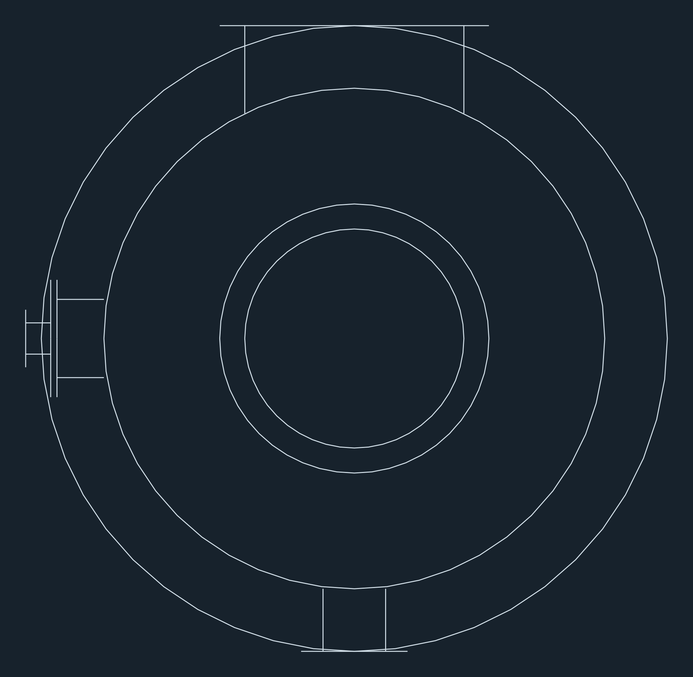

模型/基础/塔架 · 1.0/2.0对照 · 相对支承校核 · 定位待核
L41B02 尾气洗涤塔 · 2.0-L41B02-01
台账第105行为1台、Ø2200×10300。没有新增制造总图，本次采用原设备示图的完整侧视2689—2723和俯视2E93，并核对专用圆基础图及增补钢塔架图。
本体：直段上端9400，锥段至10100，顶口至10300；原顶口/锥段分界和底部130高圆柱修正。底部恢复R50转角及环形锚板，撤下原推断四托座。底部立边按连续环表达仅为展示假定，真实分段/构造待详图。2800×100示意支承块不并入设备，不替代专用圆基础。
侧口：西侧低口中心250；北侧大口1500；南侧下口800、中下5000、中上7000、上口8900。原模型375、2120、1150、3050、5750、8420均有修正。口径/外廓按侧视量测，不写成确认DN。喷淋锥线、内部喷管和除雾件不作为外部梁架补造。
图纸取舍：侧视顶法兰955、俯视1182.5；侧视底锚圈2600、俯视2750，存在差异。本体外形统一按侧视；底锚圈结合专用基础Ø2400/12-M24配套；俯视只取相对方位。制造总图和绝对工艺方位待核。壁厚18、法兰厚20、螺栓孔Ø30为显示值，不能视为制造确认。
基础与塔架：原Ø2600圆基础、50厚二次浇筑、12-M24、四柱2400×2400菱形塔架均逐字节保留。局部对照沿用基础顶Z0、钢架楼面Z-300；原23.000楼面对应总装EL123，基顶EL123.300、架顶EL131.300。不擅自改动受力柱、斜撑或限位杆躲开接口。
安装：旧文字插点不能唯一确认设备中心，绝对X/Y及工艺方位仍待核，不进入总装、不计入全厂碰撞结论。钢架局部对照不能代替厂房安装确认。其他98项台账、72台已定位设备、27台待定位分类及建筑/桥架保持；1.0和原始资料保留。
基础接口补查：沿用原12-M24锚栓200mm露头显示值，当前侧口与锚栓有1个构件对相交，见基础接口校核.json。侧口、支墩和锚栓三者的相对方位及露头高度待制造/配套详图，不能只靠缩短锚栓消除记录。
原模型相交构件对 2，本次模型相交构件对 6。仅此同心组合，绝对位置/方位未确认。
| 设备构件 | 钢架构件（原索引） |
|---|---|
| 接口_西侧低口_接管 | 支墩_混凝土 #6 |
| 接口_西侧低口_法兰 | 支墩_混凝土 #6 |
| 接口_北侧大口_接管 | 钢塔架_GJ03倒V撑 #13 |
| 接口_北侧大口_接管 | 钢塔架_GJ03倒V撑 #21 |
| 接口_北侧大口_法兰 | 钢塔架_GJ03倒V撑 #13 |
| 接口_北侧大口_法兰 | 钢塔架_GJ03倒V撑 #21 |

